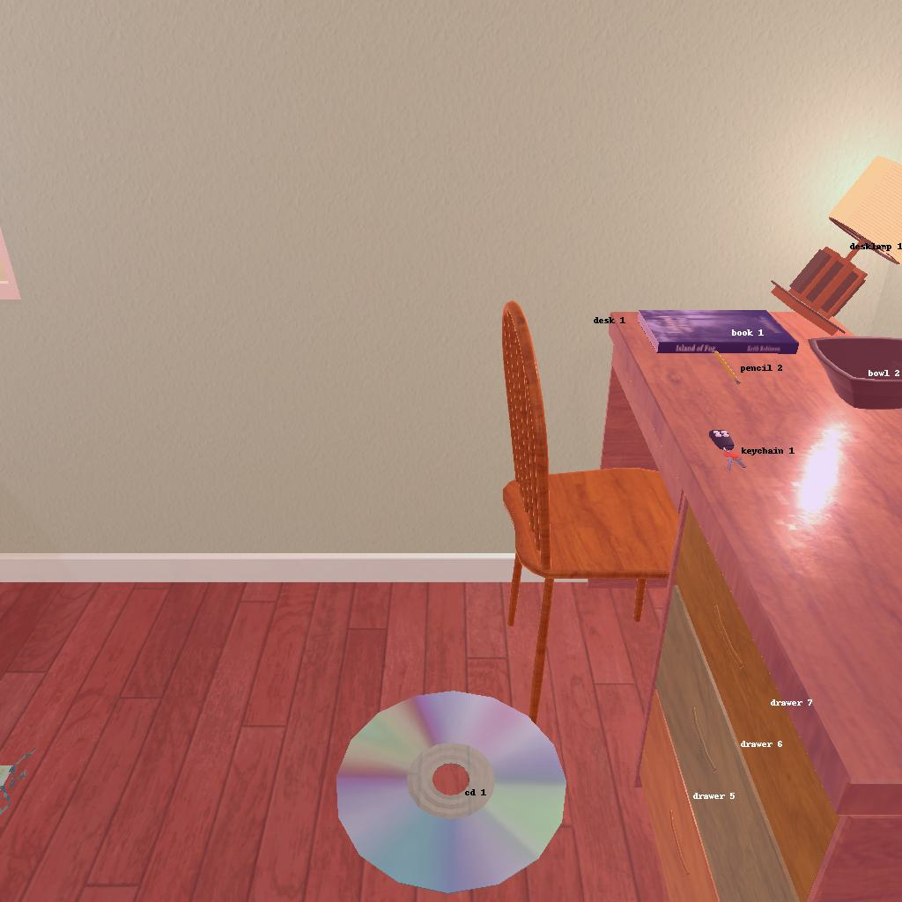
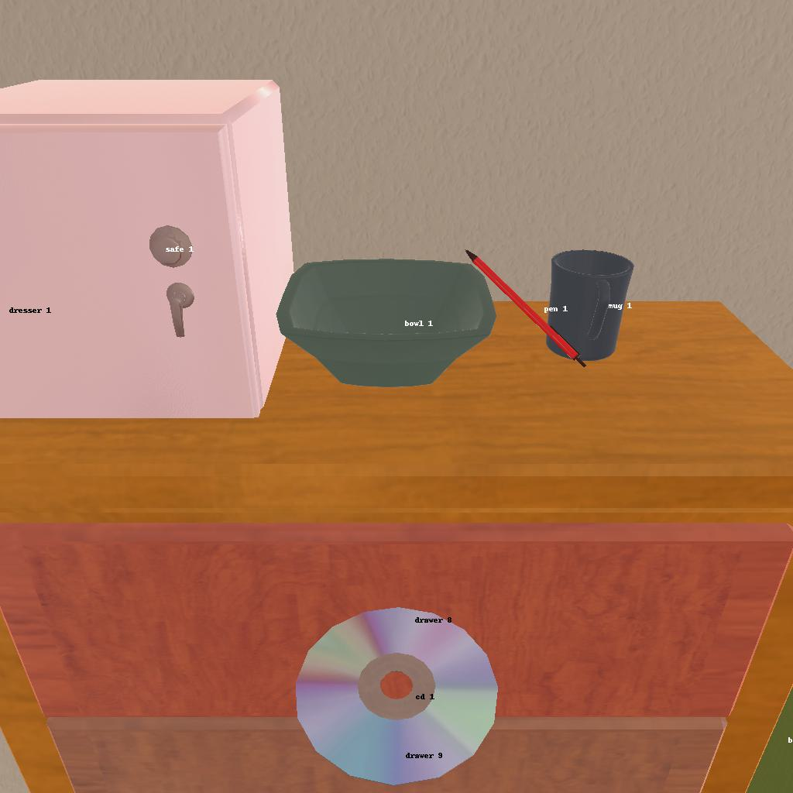

---------------------------------------------------------task: 6---------------------------------------------------------
--------------------------------------------------------------------------------------------------------------------------------------------------------------------
--------------------------------------------------------------------------------------------------------------------------------------------------------------------
Step:--------------------------------------------------------------------------9-------------------------------------------------------------------------------
----------------------------------------
VLM Prompt:
Image1:
Image2:
**Instruction**
1. Analyze the provided image to identify all visible household objects, focusing on those relevant to the task description "put some cd on safe."
2. Use the analysis of the image and the task hint "The agent must find an object of the desired type, pick it up, find the correct location to place it, and put it down there." to answer the question: what is the most reasonable action in the choices for the task description "put some cd on safe"?
4. Decide and write the answer using the template: The answer is: (i): , where i is the real number. If there is no desired object in the image, search every place based on **Initial Observation** to find the object. And if no one is exactly correct, choose a similar answer.
**Initial Observation**
You are in the middle of a room. Looking quickly around you, you can see bed (1-2), dresser (1), sidetable (1-2), drawer (1-11), desk (1), garbagecan (1), safe (1)
**Answer Choices**
(1): go to bed 1
(2): go to bed 2
(3): go to sidetable 1
(4): go to drawer 1
(5): go to drawer 2
(6): go to sidetable 2
(7): go to drawer 3
(8): go to drawer 4
(9): go to desk 1
(10): go to garbagecan 1
(11): go to drawer 5
(12): go to drawer 7
(13): go to drawer 8
(14): go to drawer 9
(15): go to drawer 10
(16): go to drawer 11
(17): go to safe 1
(18): put cd 1 in/on dresser 1
(19): examine cd 1
(20): examine dresser 1
**Answer**
Let's think step by step by following the instructions.
----------------------------------------
----------------------------------------
Original Response:
First, we analyze the provided images to identify all visible household objects relevant to the task description "put some cd on safe." In Image1, we can see a cd labeled "cd 1" on the ground next to the desk labeled "desk 1." In Image2, we can see the same cd on the ground and the safe labeled "safe 1" on top of "dresser 1."
Based on the task hint, the agent must pick up the cd and put it on the safe. Since we have already located "cd 1" and "safe 1," the most reasonable action would be to pick up "cd 1" and place it on "safe 1."
The answer is: (17): go to safe 1.
Once the agent is at the safe, the next reasonable action would be to pick up the cd and place it on the safe, but since that option is not listed, the closest action to continue the task is to go to the safe first.
----------------------------------------
----------------------------------------
>>> Refine Original VLM Response and Get Pure Action: go to safe 1
----------------------------------------
-----------------------------------------------------------------
Running time: 8.545441389083862 seconds
Total Money: 2.6531900000000004
-----------------------------------------------------------------
-----------------------------------------------------------------
Text Observation:You arrive at loc 18. The safe 1 is closed.
-----------------------------------------------------------------
UNSUCCEED